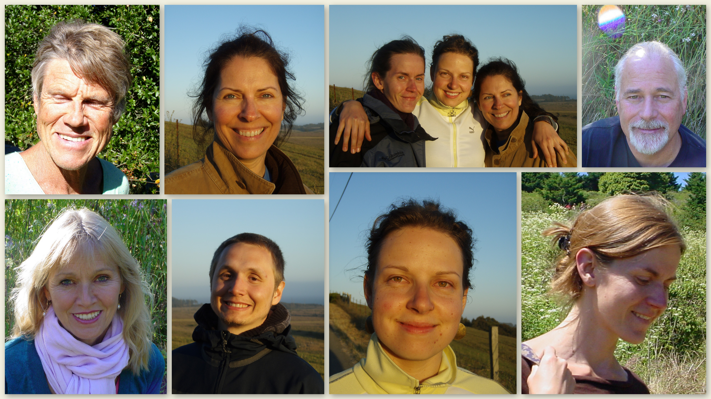

thrivalist
community
welcome to the thrive-alist community. we’d like to give you a quick overview of how we arrived at this location. it’s post great disruption. peak oil passed, the government and most “controlled” services are in chaos. many americans decided to press on, much like argentina and cuba. for us, a small group from around the globe, as individuals were wondering where we’d like to start fresh. all of us, in our own way, thought of this valley and the permaculture class we’d taken years ago. each one of us decided we felt a sense of home in this magical valley and found a way to make it back here.
arriving within days of each other, we found the valley mostly intact with a small group of permaculturists who had been taking care of the land for a few years. they were very good at what they did and the valley was thriving. they had traded their surplus fruits, veggies and goat milk with their neighbors. there was so much more available that they didn’t have the capacity to care for the land and market it too.
the core group welcomed us in. they were ready for new faces and ideas—and hands to help with some of the work! we knew that co-creation was the only way to approach a plan for the future. not just between the human element, but also the land and its “other” inhabitants.
great care was taken to “listen” to the land. we walked the valley in groups, assessing not only the physical assets, but being very open and aware to any other input.
the first thing we did when sat down for a strategy meeting was to take some quiet time and share what each of us “received” from the land. initially, we had thought an eco-resort would be the way to spread the message of thriving while living in harmony with the land. as each of us related our interaction with the property, it became clear that what the land would support was an educational center, much as it had been pre great disruption. it would become a way to give back to those who wanted to move forward, to celebrate the changes.
with those thoughts in mind, we welcome you to the thrive-alist community.
together we co-created an even more thriving valley and lifestyle with a focus on sharing the skills of the group with others who wanted a beautiful lifestyle in the new world.
